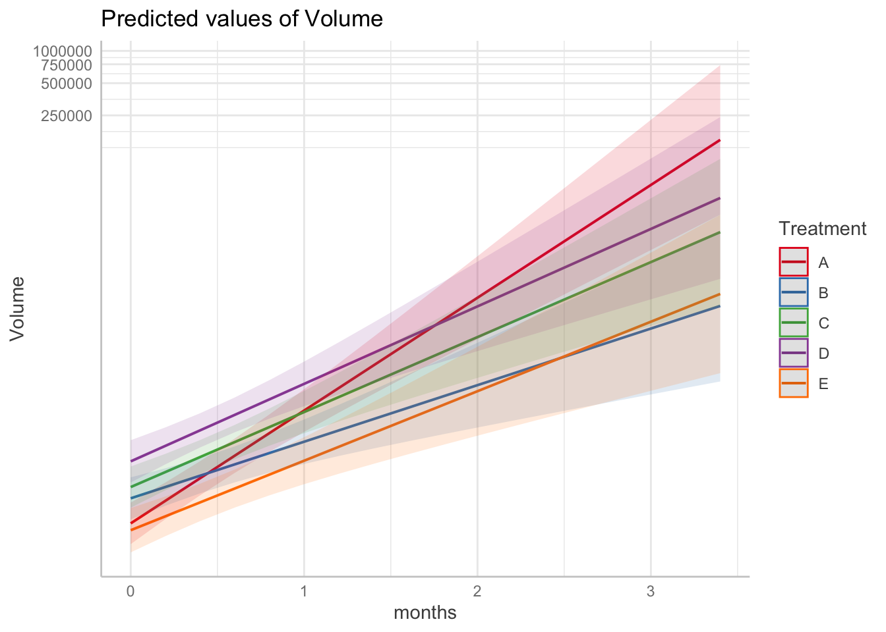

library(tumr)Troubleshooting
Convergence Failure with lmm()
If you encounter the warning
“Model failed to converge with max|grad|”
when fitting a model with lmm(), one common cause is poor scaling of the time variable. A simple and effective fix is to rescale time to a larger unit (for example, from days to months).
Example
Using the melanoma2 dataset, the following code produces a convergence warning:
data(melanoma2)
mel2 <- tumr(melanoma2, ID, Day, Volume, Treatment)
lmm(mel2)Warning in checkConv(attr(opt, "derivs"), opt$par, ctrl = control$checkConv, :
Model failed to converge with max|grad| = 0.00770192 (tol = 0.002, component 1)Linear mixed model fit by REML. t-tests use Satterthwaite's method [
lmerModLmerTest]
Formula: log1p(Volume) ~ Treatment * Day + (Day | ID)
Data: data
REML criterion at convergence: 1216.5
Scaled residuals:
Min 1Q Median 3Q Max
-6.8683 -0.3590 0.0569 0.4891 4.0759
Random effects:
Groups Name Variance Std.Dev. Corr
ID (Intercept) 0.3909661 0.62527
Day 0.0006512 0.02552 -0.51
Residual 0.3220695 0.56751
Number of obs: 568, groups: ID, 47
Fixed effects:
Estimate Std. Error df t value Pr(>|t|)
(Intercept) 3.660913 0.226879 46.832508 16.136 < 2e-16 ***
TreatmentB 0.538342 0.322550 42.898540 1.669 0.10240
TreatmentC 0.780536 0.319566 46.084794 2.442 0.01848 *
TreatmentD 1.332902 0.324098 48.718882 4.113 0.00015 ***
TreatmentE -0.146928 0.331967 42.423144 -0.443 0.66030
Day 0.079710 0.008971 47.892785 8.886 1.07e-11 ***
TreatmentB:Day -0.039724 0.012690 43.359049 -3.130 0.00312 **
TreatmentC:Day -0.026728 0.012553 46.242169 -2.129 0.03860 *
TreatmentD:Day -0.024966 0.013209 54.204921 -1.890 0.06411 .
TreatmentE:Day -0.030604 0.012996 42.191780 -2.355 0.02326 *
---
Signif. codes: 0 '***' 0.001 '**' 0.01 '*' 0.05 '.' 0.1 ' ' 1
Correlation of Fixed Effects:
(Intr) TrtmnB TrtmnC TrtmnD TrtmnE Day TrtB:D TrtC:D TrtD:D
TreatmentB -0.703
TreatmentC -0.710 0.499
TreatmentD -0.700 0.492 0.497
TreatmentE -0.683 0.481 0.485 0.478
Day -0.577 0.406 0.410 0.404 0.394
TretmntB:Dy 0.408 -0.560 -0.290 -0.286 -0.279 -0.707
TretmntC:Dy 0.412 -0.290 -0.573 -0.289 -0.282 -0.715 0.505
TretmntD:Dy 0.392 -0.276 -0.278 -0.585 -0.268 -0.679 0.480 0.485
TretmntE:Dy 0.398 -0.280 -0.283 -0.279 -0.556 -0.690 0.488 0.493 0.469
optimizer (nloptwrap) convergence code: 0 (OK)
Model failed to converge with max|grad| = 0.00770192 (tol = 0.002, component 1)Solution: Rescale the Time Variable
In this case, converting time from days to months resolves the convergence issue. Below, we create a new time variable by dividing by the average number of days per month, update the tumr object, and refit the model:
melanoma2$months <- melanoma2$Day / (365/12)
mel2 <- tumr(melanoma2, ID, months, Volume, Treatment)
lmm(mel2)Linear mixed model fit by REML. t-tests use Satterthwaite's method [
lmerModLmerTest]
Formula: log1p(Volume) ~ Treatment * months + (months | ID)
Data: data
REML criterion at convergence: 1182.4
Scaled residuals:
Min 1Q Median 3Q Max
-6.8683 -0.3590 0.0569 0.4891 4.0759
Random effects:
Groups Name Variance Std.Dev. Corr
ID (Intercept) 0.3911 0.6254
months 0.6025 0.7762 -0.51
Residual 0.3221 0.5675
Number of obs: 568, groups: ID, 47
Fixed effects:
Estimate Std. Error df t value Pr(>|t|)
(Intercept) 3.6609 0.2269 46.8170 16.134 < 2e-16 ***
TreatmentB 0.5383 0.3226 42.8852 1.669 0.10244
TreatmentC 0.7805 0.3196 46.0697 2.442 0.01849 *
TreatmentD 1.3329 0.3241 48.7024 4.112 0.00015 ***
TreatmentE -0.1469 0.3320 42.4100 -0.443 0.66031
months 2.4245 0.2729 47.8797 8.885 1.07e-11 ***
TreatmentB:months -1.2083 0.3860 43.3477 -3.130 0.00312 **
TreatmentC:months -0.8130 0.3818 46.2297 -2.129 0.03861 *
TreatmentD:months -0.7594 0.4018 54.1899 -1.890 0.06412 .
TreatmentE:months -0.9309 0.3953 42.1808 -2.355 0.02327 *
---
Signif. codes: 0 '***' 0.001 '**' 0.01 '*' 0.05 '.' 0.1 ' ' 1
Correlation of Fixed Effects:
(Intr) TrtmnB TrtmnC TrtmnD TrtmnE months TrtmB: TrtmC: TrtmD:
TreatmentB -0.703
TreatmentC -0.710 0.499
TreatmentD -0.700 0.492 0.497
TreatmentE -0.683 0.481 0.485 0.478
months -0.577 0.406 0.410 0.404 0.395
TrtmntB:mnt 0.408 -0.560 -0.290 -0.286 -0.279 -0.707
TrtmntC:mnt 0.413 -0.290 -0.573 -0.289 -0.282 -0.715 0.505
TrtmntD:mnt 0.392 -0.276 -0.278 -0.586 -0.268 -0.679 0.480 0.485
TrtmntE:mnt 0.398 -0.280 -0.283 -0.279 -0.556 -0.690 0.488 0.493 0.469After rescaling the time variable, the model fits without producing the convergence warning.
Why This Works
Rescaling time can improve numerical stability during optimization, making it easier for the model to converge—especially when time values are large or measured on a very fine scale.
Putting lmm() Summary Plot on the Log Scale
When viewing the summary plot from lmm(), you may see the message:
“Model has log1p-transformed response. Back-transforming predictions to original response scale.Standard errors are still on the transformed scale.”
This message appears because lmm() fits the model using a log1p-transformed response by default, and the plot() method automatically back-transforms predicted values to the original response scale.
If you prefer to view the predicted volume values on the log scale, you can apply a log transformation directly to the plot’s y-axis. Since the summary plot is a ggplot2 object, this can be done using scale_y_continuous() with a log1p transformation from the scales package.
lmm_mel2 <- lmm(mel2)
plot(lmm_mel2)$predicted_measure + ggplot2::scale_y_continuous(trans = scales::log1p_trans())Model has log1p-transformed response. Back-transforming predictions to
original response scale. Standard errors are still on the transformed
scale.Scale for y is already present.
Adding another scale for y, which will replace the existing scale.
This approach preserves the model fit while allowing you to visualize predictions and uncertainty on the transformed scale.
lmm() Summary with Edited Formula
The lmm() function allows you to override the default model formula, providing flexibility when fitting alternative model specifications.
By default, lmm() fits a model of the form log1p(measure) ~ group * time + (time | id) (for example, Volume ~ months + (1 | ID)).
In the example below, the default formula is replaced with a simpler model that uses a rescaled time variable and a random intercept only:
lmm_mel2 <- lmm(
tumr_obj = mel2,
formula = "Volume ~ months + (1 | ID)"
)While the model fits successfully, calling summary() on this object will fail:
#summary(lmm_mel2)This occurs because the summary() method is designed around the default lmm() model structure and currently assumes that formula. As a result, alternative formulas may not be fully supported by summary().
When using a custom formula, keep in mind that some downstream methods—such as summary()—may not behave as expected.